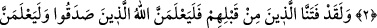

BİZDEN
KAÇABİLECEKLERİNİ Mİ
SANDILAR?
Rahmân ve Rahîm (olan) Allah’ın adıyla.
1. Elif. Lâm. Mîm.
2. İnsanlar, imtihandan geçirilmeden, sadece “Îman ettik” demeleriyle
bırakılıvereceklerini mi sandılar?
3. Andolsun ki, biz onlardan öncekileri de imtihandan geçirmişizdir. Elbette Allah,
doğruları ortaya çıkaracak, yalancıları da mutlaka ortaya koyacaktır.
4. Yoksa kötülükleri yapanlar bizden kaçabileceklerini mi sandılar? Ne kadar
kötü (ne yanlış) hüküm veriyorlar!
5. Kim Allah’a kavuşmayı umuyorsa, bilsin ki Allah’ın tayin ettiği o vakit elbet
gelecektir. O, her şeyi işiten ve bilendir.
6. Cihad eden, ancak kendisi için cihad etmiş olur. Şüphesiz Allah, âlemlerden
müstağnîdir. (O’nun hiçbir şeye ihtiyacı yoktur).
“Elif. Lâm. Mîm.”
Kâşifî der ki: Hurûf-ı mukattaa, insanları âciz bırakmak (ta‘ciz) içindir. İnsanlar
bilmelidirler ki bu Kitab’ın hakikatlerine ermek için bir yol yoktur. Hiçbir kâmil
kimsenin aklı bu kelâmın marifetinin künhüne vâkıf olamaz.
Akıl âciz, idrâk de onda kaybolup gitmiştir...
Bu sûrenin başında bulunan harflerle ilgili olarak şunlar söylenmiştir: